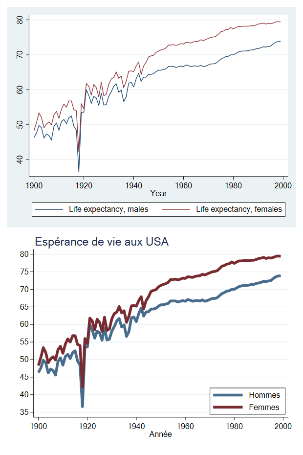
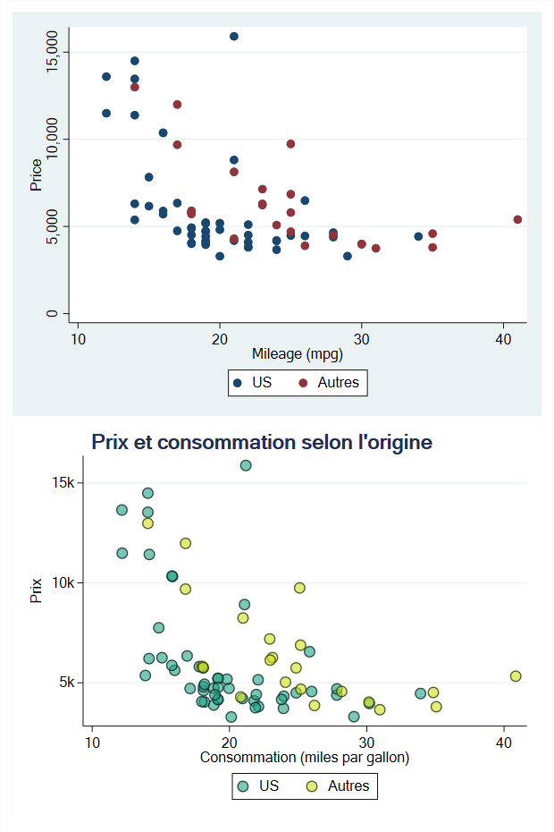

#delimit ;
tw scatter y x,
[option1]
[option2]
[option3]
.
.
[option n]
;
#delimit cr
* Suite du programmTypes et syntaxe
Types de graphique
On peut identifier deux types de graphiques avec Stata.
Oneway et twoway
- Les graphiques de type one-way : coordonnées sur un seul axe avec ou non, un axe discret. Ils peuvent être préfixés ou non par
graph:graph box,graph bar,histogram…..
- Les graphiques de type two-way : coordonnées sur deux axes, optionnellement selon le type de graphique un troisième axe peut être renseigné. Ils sont préfixés ou non par
tw(twoway) :tw scatter,tw line, …
Certains types de graphiques sont de type oneway ou twoway. C’est le cas des histogrammes avec une commande histogram et une commande tw histogram.
Les coordonnées sont généralement renseignées par des noms de variables. Pour certaines commandes graphiques, les valeurs sont directement renseignées: tw scatteri pour un nuage ou tw pci pour des segments [ici 4 coordonnées : (ymin, xmin) et (ymax, xmax)].
Un graphique peut être aussi généré par une fonction : tw function y = f(x).
On peut obtenir la liste et aides des commandes graphiques officielles avec help graph.
Choix du délimiteur
Un graphique peut devenir assez gourmand en options. Par défaut avec Stata l’exécution est faite ligne par ligne avec l’option par défaut #delimit cr. Pour exécuter une commande sur plusieurs lignes, il est d’usage d’utiliser un triple slash ///. Pour les graphiques, cette option manque de souplesse et peut provoquer des messages d’erreur lorsque /// est attaché par inadvertance au dernier caractère d’une ligne.
Lorsque le nombre de lignes devient assez conséquent, il est préférable d’utiliser ; comme délimiteur. Le changement de délimiteur se fait avec #delimit ; et on indique la fin de l’exécution avec ;. On retourne au délimiteur par défaut avec #delimit cr.
Eléments de syntaxe
Pour des raisons de vocabulaire, nous allons utiliser le terme de géométrie utilisée par l’incontournable librairie ggplot2 de R pour identifier un type de graphique comme scatter, line…. Mais pas seulement. en fin de document je traite de l’utilisation de la librairie Python plotnine, qui est un wrapper relativement complet de ggplot2, directement exécutable dans un éditeur .do ou .ado. depuis la version 16 de Stata.
En première approche, la syntaxe d’un graphique avec Stata est particulièrement simple :
[tw/graph] type_géométrie coordonnées [if/in] [weight], [options géométrie] [,[options du graphique]]Un bloc d’objets graphiques (même type)
Un graphique comportant plusieurs géométries de même type peut être exécuté avec un seul bloc de coordonnées renseigné par des variables pour l’axe des ordonnées. Ces différentes coordonnées peuvent être des variables correspondant à plusieurs valeurs d’une variable additionnelle, souvent de type catégoriel [voir la commande separate plus bas].
[tw/graph] type_géométrie Y1 Y2 Y3.... [X] [, option1(Y1 Y2 Y3...)..options_du graphique]Les options de la géométrie (plusieurs coordonnées pour Y) comme les couleurs ou les tailles/épaisseurs sont indiquées à la suite dans l’option choisie. Si on veut changer les couleurs de plusieurs courbes associées aux variable y1,y2 et y3: color(couleurY1 couleurY2 couleurY3).
Exemple
Graphique de type line, reportant les espérances de vie aux USA de 1900 à 2000. Le premier graphique est sans option, le second en comporte.

Premier graphique (haut)
sysuse lifeexp, clear
tw line le_male le_female year Second graphique (bas)
sysuse lifeexp, clear
#delimit ;
tw line le_male le_female year,
lc(*.8 *1.2)
lw(*4 *4)
title("Espérance de vie aux USA", pos(11))
legend(order(1 "Hommes" 2 "Femmes") pos(4) col(1) ring(0))
ylabel(35(5)80, angle(0))
xtitle("Année")
graphr(color(white)) plotr(color(white))
;
Note
Avec le changement de délimiteur, il est plus facile de distinguer les différents éléments du graphique, comme les options qui affectent directement les courbes (couleur, épaisseur) et les options générales du graphique (titre, légende, labels de y à l’horizontal, titre de x, couleur de fond).
Options des courbes:
lc(...): je baisse la saturation de la courbe des hommes de 20% (plus claire) et j’augmente celle des femmes de 20% (plus foncée). Les couleurs par défaut sont conservées (palette Stata s2color).lw(...): j’augmente fortement l’épaisseur des courbes (*4). Stata dispose de plusieurs unités pour altérer les tailles et épaisseurs, celle utilisée par défaut est une unité de type relative (voir la section dédiées plus bas).
Options du graphique:
- J’ajoute un titre avec l’option
title(…)que je positionne à 11 heures à l’extérieur avec l’argumentpos(11). - Je change les labels de la légende dans l’option
legend(...)avec l’argumentorder(...). Je change la position de la légende en a mettant dans la zône du graphique avecring(0)et à 4 heures avecpos(4). Les labels sont reportés sur une colonne avec l’argumentcol(1). - Je modifie les labels des ordonnées avec l’option
ylabel(...), en changeant le delta des coordonnées reportées et en mettant les labels à l’horizontal avec l’argumentangle(0). - Je modifie le titre des abscisses avec l’option
xtitle(...). - Je modifie les couleurs de fonds du graphique qui est composée de deux zônes: la zône où est réellement tracé le graphique avec l’option
plotr()[ouplotregion(...)] et la zône externe avecgraphr(...)[ougraphregion(...)] où se trouve reporté par défaut les titres et les légendes. Pour changer la couleur de fond, on utilise l’argumentcolor(...).
Plusieurs blocs d’objets graphiques
Dans l’exemple précédent on avait deux variables, mais il est plus standard que les bases donnent des observations à partir d’une variable qui peut être croisées avec d’autres informations regroupées avec une variable discrète. Par rapport à d’autres langages graphiques, on pense bien évidemment à R avec ggplot, les choses se gâtent un peu du côté de Stata car plusieurs graphiques doivent être exécutés séparément dans la même commande. On donnera plus loin un moyen via les macros et les boucles d’automatiser cette exécution. Cela ne concerne que les éléments surperposés, Stata possédant en revanche une option pour générer des sous graphiques de type facettes ou small-multiple (voir section sur les graphiques combinés).
Chaque sous graphique a son propre jeu d’options et ont doit bien indiquer leur séparation, soit avec des parenthèses soit avec des doubles barres horizontales.
(graph 1, options graph1) (graph2, options graph2)… (graph n, option graph n) , options graphiquesou
graph 1, options graph1 || graph2, options graph2 ||…. || graph n, option graph n || , options graphiquesMa préférence va plutôt à la deuxième solution pour éviter une surabondance de parenthèses déjà très présentes, et souvent imbriquées dans les options. Par ailleurs il me semble qu’on visualise mieux la séparation entre les différents éléments graphiques.
Principe de la syntaxe avec ; comme délimiteur
Graphiques séparés par ()
#delimit ;
[tw/graph]
(type_géométrie1 Y1 [X1] [Y2] [X2] [Z] [in if] [weight]
[, options(1)])
(type_géométrie2 Y2 [X1] [Y2] [X2] [Z] [in if] [weight]
[, options(2)])
...)
[, options_graphiques]
; Graphiques séparés par ||
#delimit ;
[tw/graph]
type_géométrie1 Y1 [X1] [Y2] [X2] [Z] [in if] [weight]
[, options(1)]
|| type_géométrie2 Y2 [X1] [Y2] [X2] [Z] [in if] [weight]
[, options(2)])
...
|| [, options_graphiques]
; Exemple
Comme dans le premier graphique, celui du haut est sans option et celui du bas avec. On va afficher un nuage de point avec la base auto, entre les variables price et mpg (consommation d’essence en gallon) selon l’origine de la voiture (US ou autres pays).

Premier graphique
sysuse auto, clear
#delimit
tw
scatter price mpg if !foreign
|| scatter price mpg if foreign
||, legend(order(1 "US" 2 "Autres"))
;
Note
- Lorsqu’on superpose les sous graphiques de cette manière, Stata ne reconnait pas par défaut les labels à affecter à la légende, et affiche deux fois le label price pour chaque origine. On doit renseigner manuellement cette information.
- Petite astuce pas forcément connue de toutes et tous. Lorsqu’une variable est de type indicatrice {0,1} il n’est pas nécessaire de préciser sa valeur:
!foreignest identique àforeign==0foreignest identique àforeign==1
Second graphique
#delimit ;
tw
scatter price mpg if !foreign,
mc("31 161 135%60") msize(*1.5) mlc(black) mlw(.3) jitter(1)
|| scatter price mpg if foreign,
mc("207 225 28%60") msize(*1.5) mlc(black) mlw(.3) jitter(1)
||, title("{bf: Prix et consommation selon l'origine}", pos(11))
legend(order(1 "US" 2 "Autres"))
ylabel(5000 “5k” 10000 “10k” 15000 “15k”, angle(0))
xtitle("Consommation (miles par gallon)")
ytitle("Prix")
graphr(color(white)) plotr(color(white))
;Options des nuages
mc(...)modifie la couleur des bulles. On verra par la suite plus en détail les altérations des couleurs, mais ici on a manuellement changé leur couleur avec un code RGB sur lequel on a réduit l’opacité à 60% (ou mis 40% de transparence).mlc(...)modifie la couleur du contour des bulles, ici en noir. Par défaut la couleur du contour est identique à la couleur de remplissage de la bulle.msize()modifie la taille de la bulle.mlw()modifie l’épaisseur du contour de la bulle.jitter(): très à la mode, les jitters sont des nuages dont les coordonnées ont été perturbées aléatoirement pour réduire les effets de superposition, ici liés à la variable mpg. A utiliser avec prudence, et éviter de trop modifier les coordonnées lorsque les coordonnées représentent des valeurs continues.
Options du graphique
- Le titre a été mis en gras avec une balise SMCL (Stata Markup Control Langage) :
"{bf :texte}". - Les valeurs des prix reportés sur l’axe des ordonnées à été modifié manuellement avec des unités k (1k = 1000).
- Le reste des options sont de même nature que celles relative au graphique précédent sur les espérances de vie.